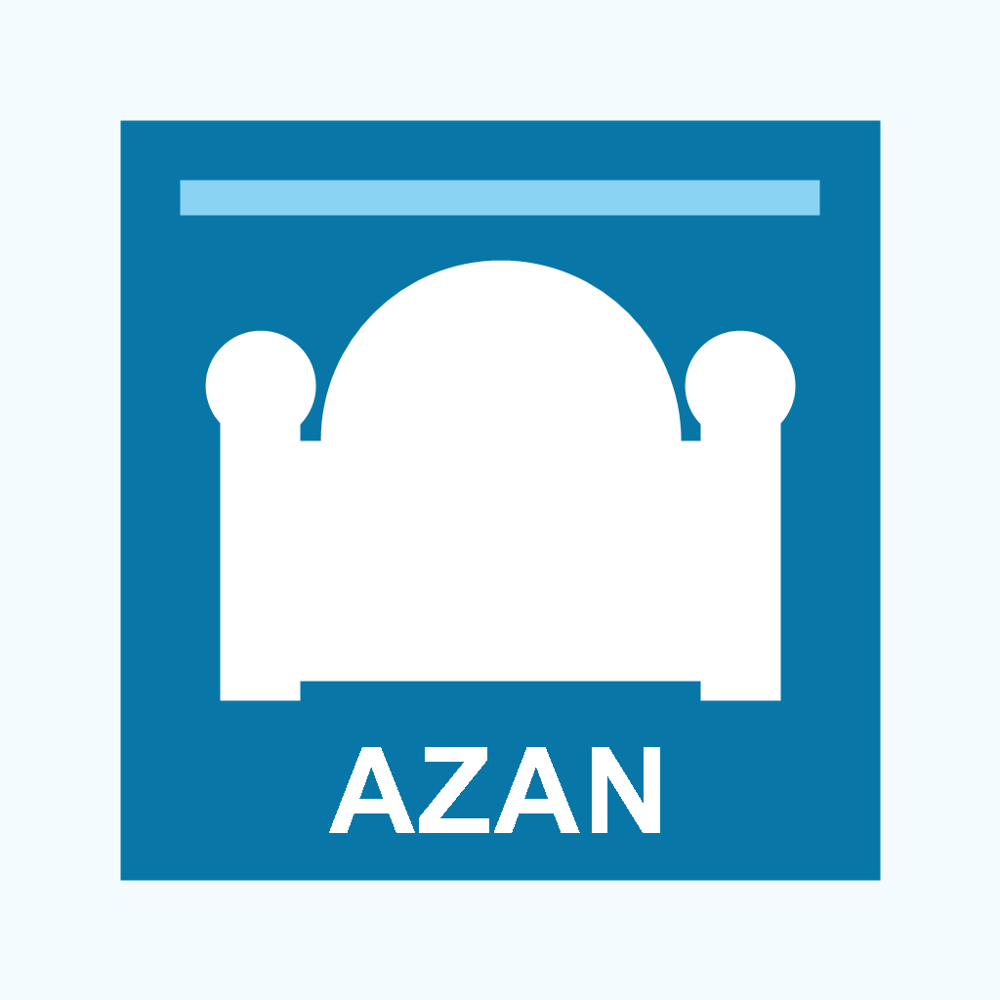

Prayer times
Location-based daily prayer times with configurable calculation preferences and a clear next-prayer view.

Muslim Life 360Prayer · Direction · Community
Your daily companion for accurate prayer planning, azan reminders, Qibla guidance and nearby mosque discovery.
Free to use · Built for iPhone and Android
A clearer daily rhythm
Designed around the moments Muslims return to every day, with a clean interface made for quick checking and dependable reminders.
Location-based daily prayer times with configurable calculation preferences and a clear next-prayer view.
Choose prayer notifications and reminder offsets. Device permissions and operating-system settings may affect delivery.
Direction calculated from your live latitude and longitude toward Masjid al-Haram in Makkah.
Discover nearby mosques and Jumu'ah venues, compare distance and open directions in your maps app.
Built with the community
Community-contributed Jumu'ah sessions help worshippers find local Friday prayer options. When a mosque has no timetable, users can add a known time to help others.
Illustrative layout only. The app shows live nearby results.
Simple by design
Used for prayer times, Qibla direction and nearby mosque search.
Select the prayers and advance-notice timing that suit your routine.
View your day, orient toward the Qibla and find nearby Jumu'ah sessions.
Independent and purposeful
Muslim Life 360 is an independently developed mobile app created in Newcastle, NSW, Australia. It combines practical mobile technology with a simple goal: help Muslims organise prayer and connect with local places of worship.
malikumarhassan@live.com →Keep it free for everyone
Every feature remains available whether you contribute or not. Optional one-time support helps maintain prayer tools, improve mosque listings and build useful new features.
Contributions are processed by Apple App Store or Google Play. The store displays the final local price and currency before payment. No card information is stored by Muslim Life 360.
Coming to your store
App Store and Google Play links will appear here when the public listings are live.